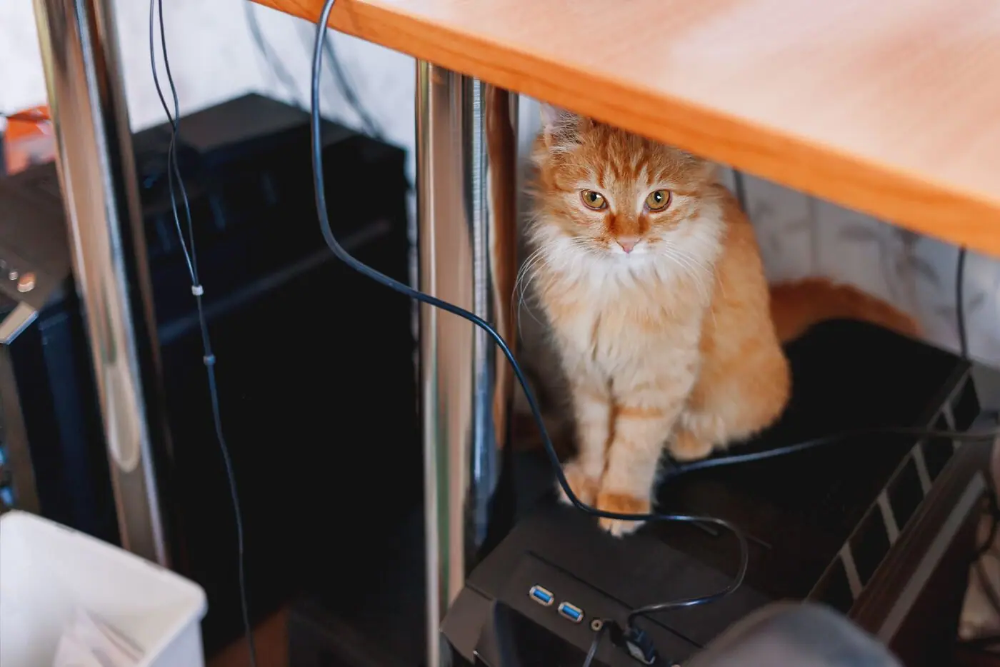

Giáo trình HSK 2 · Lesson 5快下来吧
Kuài xiàlái ba
Mau xuống đây đi!
Mục tiêu bài khóa
Sau bài học, người học có thể vận dụng các điểm ngôn ngữ chính trong giao tiếp.
复合趋向补语Dùng bổ ngữ xu hướng như 上来、下去、进来.
方位词Miêu tả vị trí với 上面、下面.
到别人家做客Giao tiếp khi đến thăm nhà người khác.
Khởi động · 热身
Chọn từ rồi chọn đúng hình ảnh tương ứng.
💡 Hãy chọn một từ trước.
Từ vựng · 生词
Mặt trước có từ, pinyin, nghĩa, loại từ và nút phát/dừng. Mặt sau có hình ảnh và ví dụ theo PowerPoint.
快
kuài
nhanh; mau
phó từ / tính từChạm vùng trống để lật thẻ
不早了，快起床吧。 🔊Bù zǎo le, kuài qǐchuáng ba.
Không còn sớm nữa, mau dậy đi. 他跑步很快。 🔊Tā pǎobù hěn kuài.
Anh ấy chạy rất nhanh. 下来
xiàlái
đi xuống đây
động từChạm vùng trống để lật thẻ
她已经下来了。 🔊Tā yǐjīng xiàlái le.
Cô ấy đã xuống rồi. 不早了，快下来吧。 🔊Bù zǎo le, kuài xiàlái ba.
Không còn sớm nữa, mau xuống đi. 上来
shànglái
đi lên đây
động từChạm vùng trống để lật thẻ

请你上来一下。 🔊Qǐng nǐ shànglái yīxià.
Làm ơn bạn lên đây một chút. 你可以上来帮个忙吗？ 🔊Nǐ kěyǐ shànglái bāng gè máng ma?
Bạn có thể lên đây giúp một chút được không? 上去
shàngqù
đi lên đó
động từChạm vùng trống để lật thẻ
他马上上去了。 🔊Tā mǎshàng shàngqù le.
Anh ấy đã lập tức đi lên rồi. 你快上去找他。 🔊Nǐ kuài shàngqù zhǎo tā.
Bạn mau lên đó tìm anh ấy đi. 下面
xiàmiàn
phía dưới
danh từChạm vùng trống để lật thẻ

桌子下面有只小猫。 🔊Zhuōzi xiàmiàn yǒu zhī xiǎo māo.
Dưới bàn có một con mèo nhỏ. 我有点儿累，就在下面等你。 🔊Wǒ yǒudiǎnr lèi, jiù zài xiàmiàn děng nǐ.
Tôi hơi mệt, nên tôi đợi bạn ở dưới này. 面
miàn
tạo danh từ phương vị
hậu tốChạm vùng trống để lật thẻ
桌子上面有什么？ 🔊Zhuōzi shàngmiàn yǒu shénme?
Trên bàn có gì? 床下面有什么？ 🔊Chuáng xiàmiàn yǒu shénme?
Dưới giường có gì? 等
děng
đợi; chờ
động từChạm vùng trống để lật thẻ
我们在这儿等等她吧。 🔊Wǒmen zài zhèr děng děng tā ba.
Chúng ta đợi cô ấy ở đây một chút đi. 你在等谁？ 🔊Nǐ zài děng shéi?
Bạn đang đợi ai? 一会儿
yíhuìr
một lát
lượng từChạm vùng trống để lật thẻ
我一会儿就回来。 🔊Wǒ yīhuǐr jiù huílái.
Tôi sẽ quay lại ngay một lát nữa. 我们一会儿再走吧。 🔊Wǒmen yīhuǐr zài zǒu ba.
Chúng ta một lát nữa hãy đi. 下去
xiàqù
đi xuống đó
động từChạm vùng trống để lật thẻ
你先下去，我马上就来。 🔊Nǐ xiān xiàqù, wǒ mǎshàng jiù lái.
Bạn xuống trước đi, tôi sẽ đến ngay. 请从这儿走下去。 🔊Qǐng cóng zhèr zǒu xiàqù.
Xin hãy đi xuống từ chỗ này. 进来
jìnlái
đi vào đây
động từChạm vùng trống để lật thẻ
不早了，快进来吧。 🔊Bù zǎo le, kuài jìnlái ba.
Không còn sớm nữa, mau vào đi. 请进来坐坐。 🔊Qǐng jìnlái zuò zuò.
Mời vào ngồi chơi một chút. 爷爷
yéye
ông nội
danh từChạm vùng trống để lật thẻ
我爷爷很高。 🔊Wǒ yéye hěn gāo.
Ông nội tôi rất cao. 奶奶
nǎinai
bà nội
danh từChạm vùng trống để lật thẻ
奶奶喜欢红色的衣服。 🔊Nǎinai xǐhuān hóngsè de yīfu.
Bà nội thích quần áo màu đỏ. 礼物
lǐwù
quà
danh từChạm vùng trống để lật thẻ
我很喜欢你送我的礼物。 🔊Wǒ hěn xǐhuān nǐ sòng wǒ de lǐwù.
Tôi rất thích món quà bạn tặng tôi. 妈妈，这是给您准备的生日礼物。 🔊Māma, zhè shì gěi nín zhǔnbèi de shēngrì lǐwù.
Mẹ ơi, đây là món quà sinh nhật con chuẩn bị cho mẹ. 准备
zhǔnbèi
chuẩn bị
động từChạm vùng trống để lật thẻ
白家月在准备考试。 🔊Bái Jiāyuè zài zhǔnbèi kǎoshì.
Bạch Gia Nguyệt đang chuẩn bị thi. 你准备一下，我们九点走。 🔊Nǐ zhǔnbèi yīxià, wǒmen jiǔ diǎn zǒu.
Bạn chuẩn bị một chút, chúng ta đi lúc 9 giờ. 奶茶
nǎichá
trà sữa
danh từChạm vùng trống để lật thẻ

我喜欢喝奶茶。 🔊Wǒ xǐhuān hē nǎichá.
Tôi thích uống trà sữa. 妈妈给我买了一杯奶茶。 🔊Māma gěi wǒ mǎi le yī bēi nǎichá.
Mẹ đã mua cho tôi một ly trà sữa. 跟
gēn
với; và
giới từ / liên từChạm vùng trống để lật thẻ
你跟她坐一起吧。 🔊Nǐ gēn tā zuò yīqǐ ba.
Bạn ngồi cùng với cô ấy đi. 明天你跟我一起去接白家月吗？ 🔊Míngtiān nǐ gēn wǒ yīqǐ qù jiē Bái Jiāyuè ma?
Ngày mai bạn có đi cùng tôi đón Bạch Gia Nguyệt không? 走
zǒu
đi; đi bộ
động từChạm vùng trống để lật thẻ
酒店很近，我们走回去吧。 🔊Jiǔdiàn hěn jìn, wǒmen zǒu huíqù ba.
Khách sạn rất gần, chúng ta đi bộ về đi. 快走吧，要下雨了。 🔊Kuài zǒu ba, yào xiàyǔ le.
Đi nhanh đi, sắp mưa rồi. 酒店
jiǔdiàn
khách sạn
danh từChạm vùng trống để lật thẻ
我们打车去酒店吧。 🔊Wǒmen dǎchē qù jiǔdiàn ba.
Chúng ta đi taxi đến khách sạn đi. 他住在酒店还是朋友家？ 🔊Tā zhù zài jiǔdiàn háishì péngyou jiā?
Anh ấy ở khách sạn hay ở nhà bạn? Bài khóa · 课文
Ảnh ngữ cảnh bên trái, nội dung và âm thanh gốc bên phải. Bài khóa 4 giữ đúng dạng đoạn văn.
Tương tác đóng vai
Chọn bài khóa 1–3 và nhân vật. Lời của vai đã chọn sẽ được ẩn; chỉ hiển thị chữ Hán.
Củng cố từ vựng
Lật đáp án từ vựng rồi hoàn thành câu hỏi đọc hiểu.
Câu hỏi đọc hiểu
Mẫu câu cần nhớ: 快下来吧！你们别客气，快坐吧。吃完饭我们走回酒店。